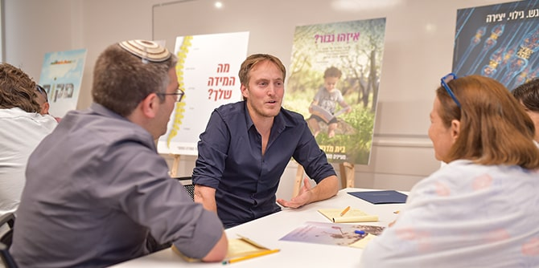
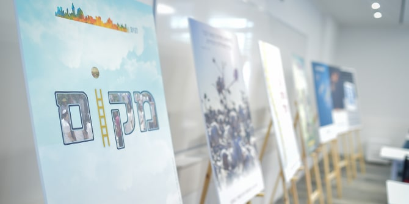
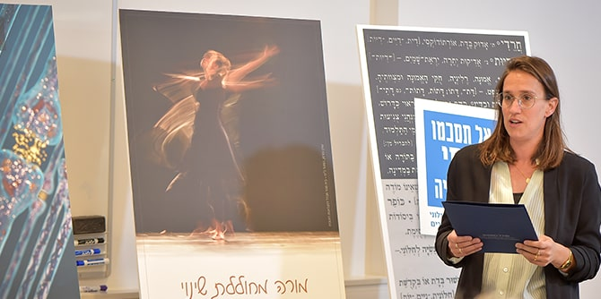

 Photo: Naveh Ben Shmuel
One of the main products that second-year fellows develop as part of their individual program of study at the Mandel School for Educational Leadership is a poster that presents their chosen area of interest in a clear visual manner. The poster is the culmination of a process in which fellows hone and refine their areas of interest, and clarify the principles and values they aim to promote in their future work in education. The poster also gives fellows an opportunity to gain experience in translating texts into visual language, and showcases their areas of interest to the broader community of the School and of the Mandel Foundation–Israel, so that its members can become active partners with the fellows during their second year of study and beyond.
On October 25, 2021, the fellows of Cohort 29 presented their posters to faculty members, the fellows’ personal tutors, the fellows of cohort 30, and representatives of the Mandel Foundation–Israel. During the fellows’ planning of the event, three main themes emerged as prominent in their areas of interest: (1) the act of education – identity and values; (2) men and women educators – humanity and growth; and (3) social change engines.
 Photo: Naveh Ben Shmuel
At the event, a series of brief presentations by the fellows were followed by personal conversations in which the presenters discussed the challenges they had identified. The audience also played an active role in the event, as its members shared their ideas for the future, and their thoughts about the areas of interest from the perspectives of policymakers, policy implementers, and the target populations. They also considered both theoretical and practical aspects of the ideas presented.
Danny Bar Giora, director of the Mandel School for Educational Leadership, congratulated the fellows of Cohort 29 on their poster presentations and explained the importance of their declaration of their intentions: “The poster presentation is a statement of intent to the broader community of the Mandel School for Educational Leadership regarding the area you seek to engage in and influence,” he said. “In addition, this is a wonderful exercise in visual language, in the art of conciseness, and in precise wording.”
Faculty member
Dr. Neta Sher-Hadar, who led the poster design process with the assistance of
Gili Stern, the School’s digital learning coordinator, spoke about the important work process that the fellows had participated in during the weeks leading up to the poster presentations. This process involved many partners who were involved in discussions and consultations, both before and after the poster presentation itself. The process also sought to deepen the fellows’ learning in their areas of interest, and to help them explore possible ways to implement their ideas. “Each poster and every declaration of intent expresses an entire world of values and proposes a direction of action, or at least the beginnings of one,” she said.
Following the poster presentation, the fellows began working on translating their studies into actions that will have significant impact on their chosen area of practice.
Click here to view the posters of Cohort 29 online (Hebrew) >>
Sample Poster Presentation

Sharon Wasserman presenting her poster (Photo: Naveh Ben Shmuel)
A Teacher Who Creates Change: Personal, Professional, and Social Development
By Sharon Wasserman
“Dancing is the hidden language of the soul,” according to American dancer and choreographer Martha Graham. As someone who began dancing at the age of eight, but long ago gave up the dream of dancing with the Batsheva Dance Company, dancing has always given me the ultimate connection between body and soul. It is a zone in which thoughts have their place, but are also silenced when necessary; an area in which I can rely on the known and familiar in my body, but also try new things, dare, deal with frustrations, and keep moving.
My name is Sharon Wasserman. I am a mother, a spouse, a law graduate, and an educator working to advance equal opportunities in education, who recognizes the significant and unique contribution made by teachers to this goal. It is the experience of movement in dance that I want to apply to the personal and professional development process that I plan to make available to teachers throughout their professional careers.
The “signature pedagogies” [the ways in which future practitioners are educated to think, perform and act with integrity in their new professions in the same way professionals in their field would] described by Professor Lee Shulman comprise habits of the mind, habits of the hand, and habits of the heart. I seek to bring the habits of the heart to center stage. These habits include (among other things) dealing with emotional-professional issues and with issues of personal and professional identity formation. The fact that these subjects are currently addressed minimally, in an undeveloped and random way, significantly affects the resilience, wellbeing, and (consequently) the professional development of teachers in the education system in Israel, as well as their ability to continue working in the education system over time. This is especially true for teachers who work in schools with high proportions of disadvantaged students, where there is a greater danger of a “cycle of social exclusion,” as defined by Professor Michal Razer.
Professional development processes in general, as well as those that are built around “habits of the heart,” should be based on a model that considers connections to the specific context: to place, culture, people, strengths, challenges, and the needs of teachers and students. Relating to the specific context allows us to develop a sharper and more appropriate examination, and will make processes more meaningful and effective. Such processes will have much greater intrinsic value for teachers, and will thus be far more powerful.
In addition, personal and professional development processes that are more meaningful for teachers will contribute to the development of teachers who are more resilient and more able to sustain their commitment to their educational mission over time. Consequently, these teachers will make an even more significant and unique contribution to providing education that is inclusive and promotes growth, that views students as individuals while at the same time seeing them in context, and that strives to promote equal opportunity in education and to create a more equitable society.
{kind=link}
{kind=link}
{kind=link}